공부한 시간이 점수로도,
실력으로도 남도록
단어 시험에서는 맞혔는데 지문에서는 못 알아보는 영어, 수업에서 들었는데 시험지 앞에서는 떠오르지 않는 영어. 그 사이가 끊겨 있으면 공부한 시간이 남지 않습니다. 직결영어는 그 사이를 곧게 잇습니다.
단어와 문장
외운 단어는 그날 읽는 지문에서 다시 만나게 합니다. 한영 짝 맞추기 대신 문장 속에서 뜻을 확인하는 시험지로 점검합니다.
수업과 시험
시험 기간에는 학교 교과서와 시험 범위에 맞춰 내신을 준비하고, 그 밖의 기간에는 수능으로 가는 독해와 어법의 기초를 다집니다.
오늘과 고등학교
중학교에서 쌓은 단어와 독해력은 고등 내신과 수능까지 그대로 가져갑니다. 긴 글을 막힘없이 읽는 힘이 필요하니 원서 읽기도 놓지 않습니다.
수업은 이렇게 돌아갑니다
듣고 끝나는 수업은 없습니다. 매 시간 확인하고, 틀린 것은 다시 확인합니다.
단어 시험으로 시작합니다
종이에 직접 쓰고, 문장 속에서 알맞은 뜻을 고르는 문제로 확인합니다.
지문에서 다시 만납니다
그날 외운 단어가 들어간 지문을 읽습니다. 아는 단어가 문장 안에서 어떻게 쓰이는지 눈으로 확인합니다.
백지에 다시 써 봅니다
배운 문법은 빈 종이에 스스로 정리해 봅니다. 설명할 수 있어야 아는 것으로 봅니다.
틀린 것은 다시 시험 봅니다
틀린 단어와 문제는 다음 수업에서 다시 확인합니다. 통과할 때까지 기록이 남습니다.
기록은 학부모님께 공유합니다
시험 결과와 과제는 직결영어 수업 관리 앱에 쌓이고, 학부모님께 정기적으로 공유합니다.
문제집 안에 없는 영어도
함께 다룹니다
교재를 한 권 끝낼 때마다 원서, 뉴스, 팝송 같은 실제 영어 콘텐츠를 함께 다룹니다. 이런 영어는 문제집 안에 없습니다. 그렇다고 기초를 건너뛰고 닿을 수 있는 곳도 아닙니다.
세계 뉴스
BBC, CNN, 뉴욕 타임스 같은 세계 언론의 최근 기사를 함께 읽습니다. 기사에서 단어 하나를 골라 뜻과 쓰임, 말의 뿌리까지 확인합니다. 읽은 내용을 두고 아이와 이야기도 나눕니다.
팝송
가사가 건전하고 아름다운 곡만 고릅니다. 함께 듣고 따라 부르면서 가사의 뜻을 담뿍 느껴 봅니다.
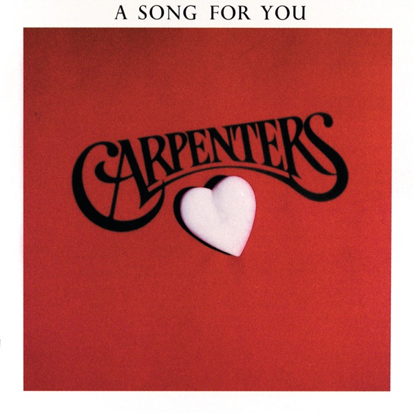
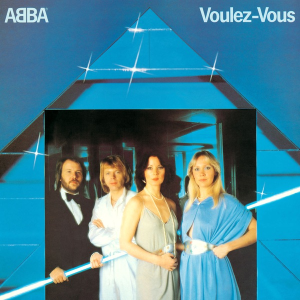
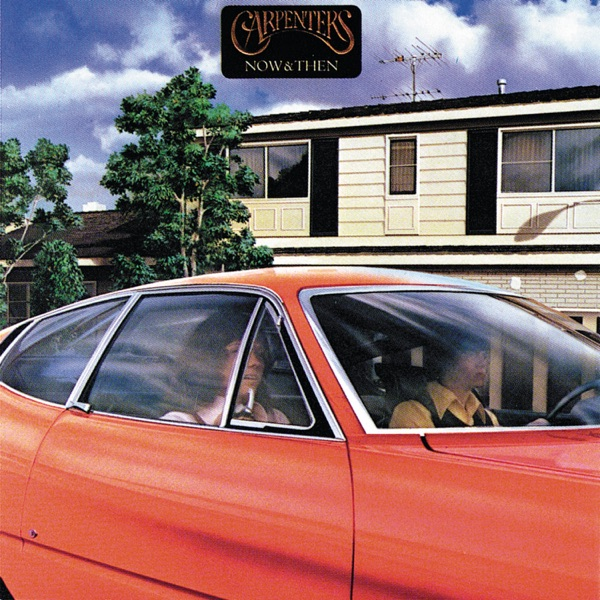
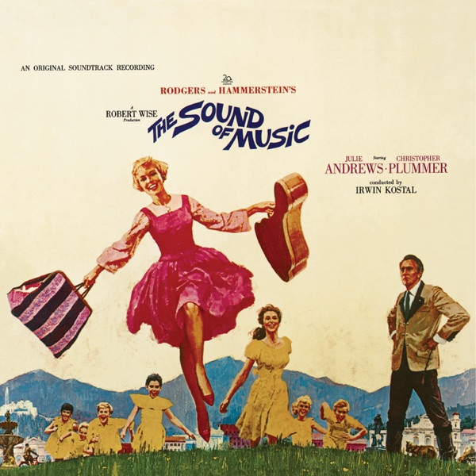
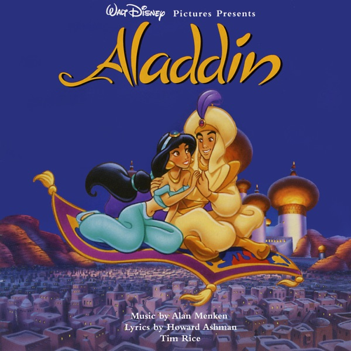
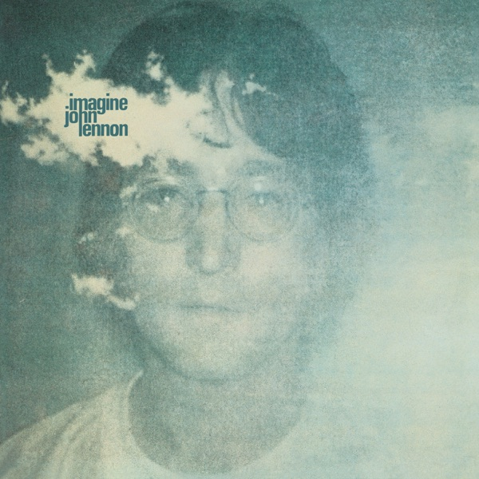
영화와 애니메이션
교육적이고 아름다운 영화와 애니메이션을 골라 봅니다. 같은 단어도 장면에 따라 뜻이 달라집니다. 표정과 목소리를 함께 보면 그 차이를 쉽게 이해할 수 있습니다.

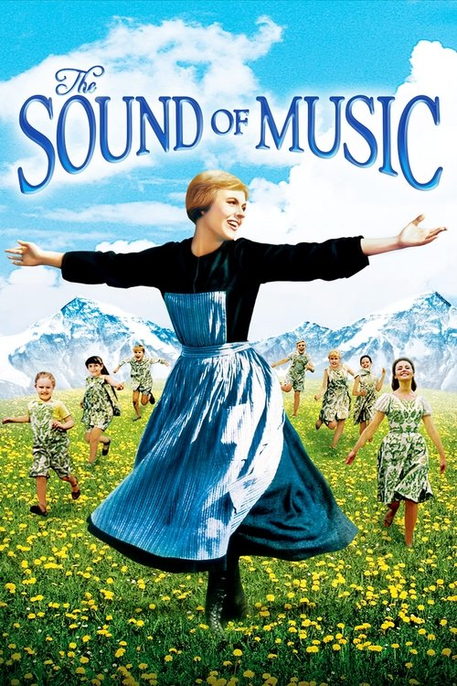
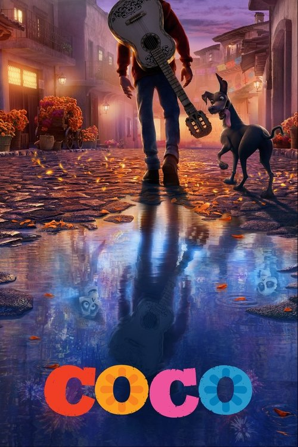
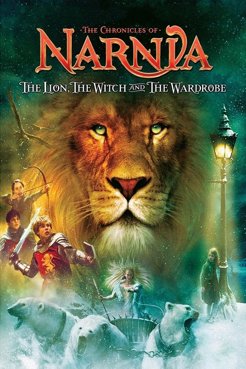
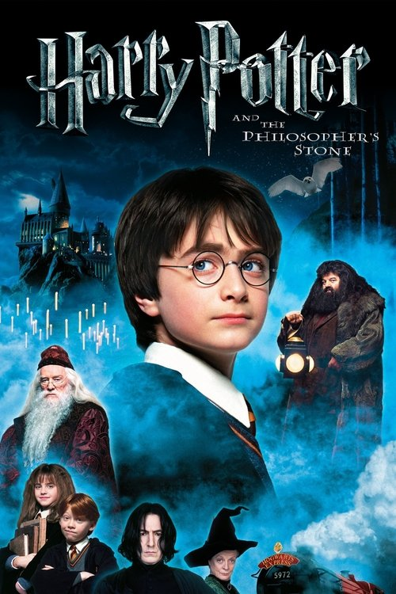
초등 고학년과 중학생이 읽기 좋은 원서를 AR 지수별로 모았습니다. 수업에서는 아이 수준에 맞는 책을 함께 고르고 소리 내 읽습니다.

Dragon Masters
어린 드래곤 마스터들의 판타지 어드벤처. 30권 이상의 긴 시리즈로 지속적 읽기 습관 형성에 적합. 각 권 분량이 적당해 부담 없이 진행 가능.
이런 아이에게 AR 3.0 이상 판타지·모험을 좋아하는 학습자. 긴 시리즈를 완독하는 성취감을 경험하게 하고 싶은 경우
세계 뉴스 속 영어 단어, 원서와 교재 고르는 법, 집에서 5분이면 해 볼 수 있는 확인법까지. 수업에서 쓰는 생각을 블로그에 먼저 풀어 둡니다.
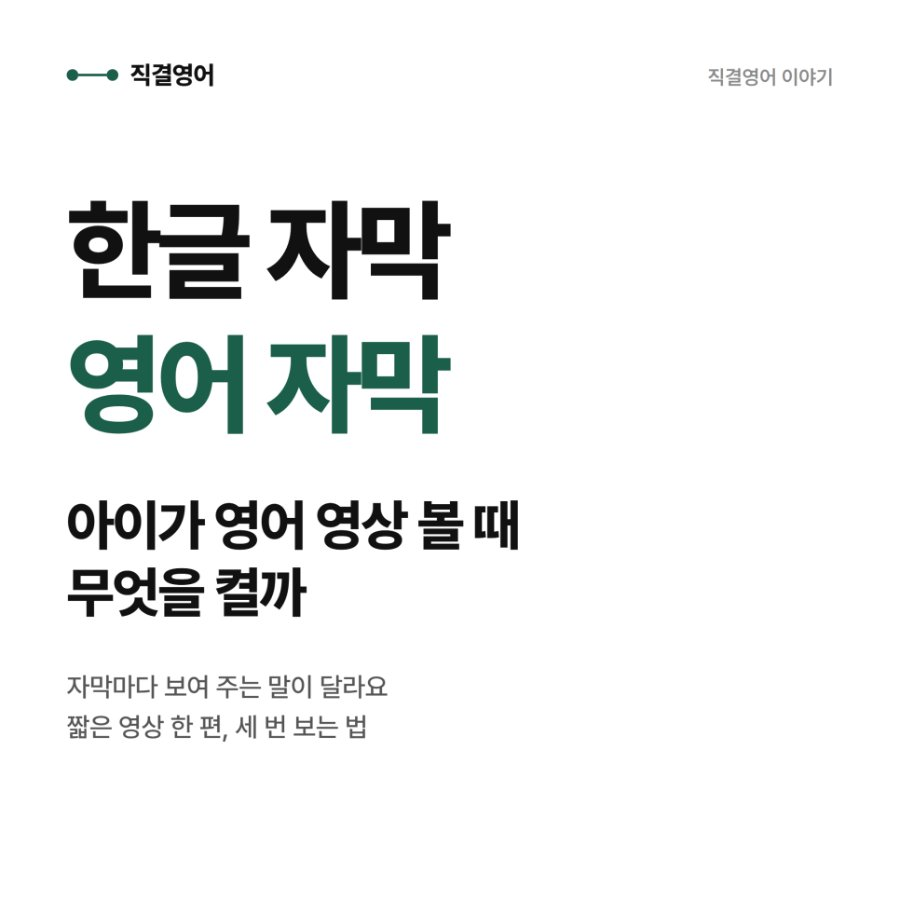
영어 자막 한글 자막, 아이가 영어 영상 볼 때 무엇을 켤까
날이 추워지고 겨울방학이 다가오면 아이가 집에서 영상을 보는 시간이 늘어나죠.
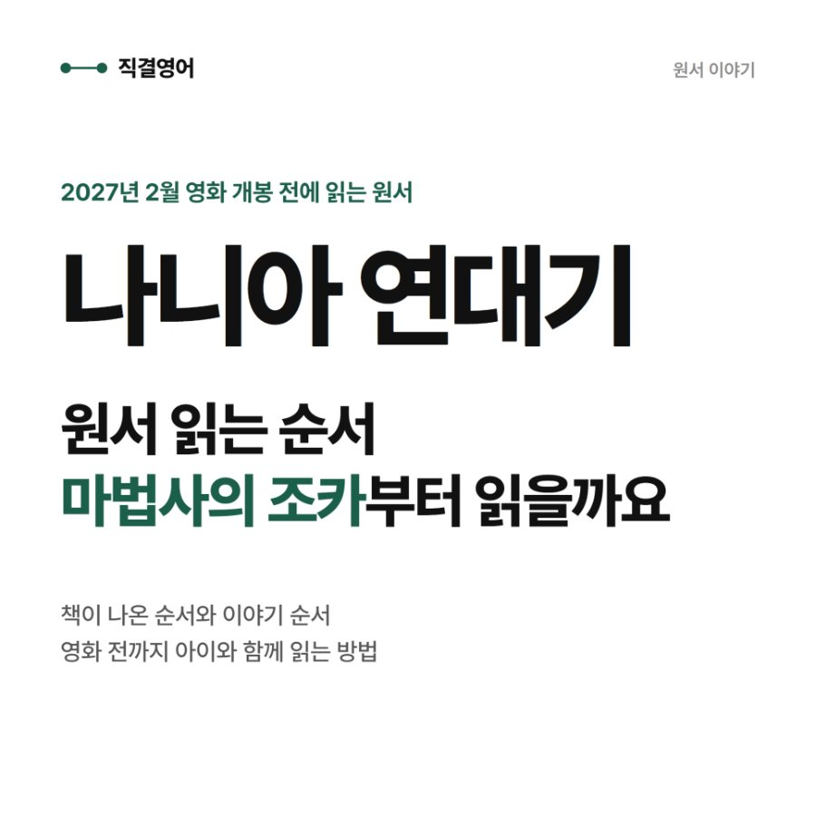
'나니아 연대기' 원서 읽는 순서, '마법사의 조카'부터
그레타 거윅 감독의 영화 '나니아: 마법사의 조카'가 2027년 2월 12일 극장에서 개봉합니다.
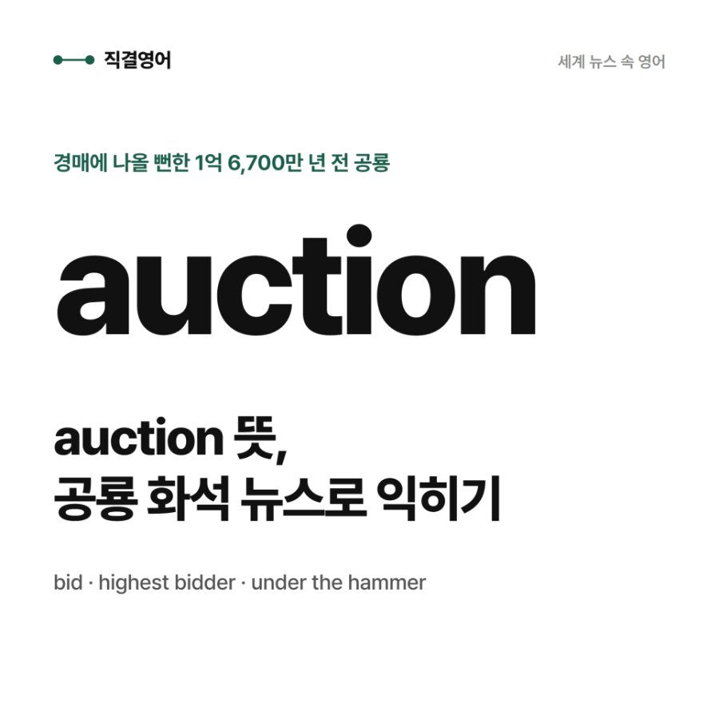
auction 뜻, 경매에 나올 뻔한 프랑스 공룡 화석 뉴스로 익히기
1억 6,700만 년 전에 살았던 육식 공룡의 화석이 다음 주 파리의 경매장에 나올 뻔했습니다.
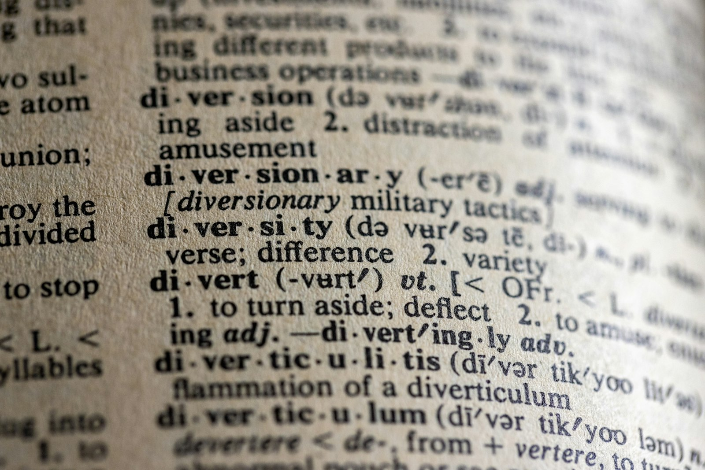
국내파로 배운 영어를
15년 동안 현장에서 확인했습니다
영어를 가르치는 게 꿈이었습니다. 한국에서 단어를 외우고 문장을 뜯어보며 영어를 익혔고, 그 방식이 틀리지 않았다는 걸 번역과 해외 협업 현장에서 매일 확인했습니다.
단어는 문장 속에서, 문장은 글의 흐름 속에서 만나야 내 것이 됩니다. 직결영어의 수업은 그 확신 위에 있습니다.
- 수능
- 국어·영어 영역 만점
- 학력
- 강원대학교 영어교육과 인문대 수석 입학, 학과 수석 조기 졸업
- 자격
- 중등학교 정교사(영어) 2급
- 영어
- 읽기·듣기·쓰기 CEFR C2 인증
- 지도
- 고등 전문 과외 4년 (수능, 외고 입시, 영어 특기자 전형)
- 번역
- 글로벌 OTT 플랫폼 영한 자막 15년 이상
- 실무
- 미국 실리콘밸리 현지화 전문 기업 7년 이상
이런 아이와 잘 맞습니다
○잘 맞습니다
- 원서는 잘 읽는데 문법과 쓰기가 약한 아이
- 영어를 꾸준히 해 왔지만 지금 방향이 맞는지 확신이 없는 아이
- 영어유치원이나 어학원을 다녔고, 이제 중고등 영어가 걱정되는 아이
- 외워야 할 때는 외울 줄 알고, 그럴 마음이 있는 아이
- 설명을 듣고 이해한 뒤 넘어가는 걸 좋아하는 아이
△잘 맞지 않을 수 있습니다
- 시험 없이 원서만 읽고 싶은 경우
- 회화 위주의 수업을 찾는 경우
- 숙제와 복습 없이 수업만으로 실력이 오르길 기대하는 경우
- 짧은 기간에 점수만 빠르게 올리고 싶은 경우
상담은 상담 신청서로
시작합니다
아이의 지금 영어와 학습 이력을 먼저 듣고, 맞는 시작점을 함께 찾습니다.